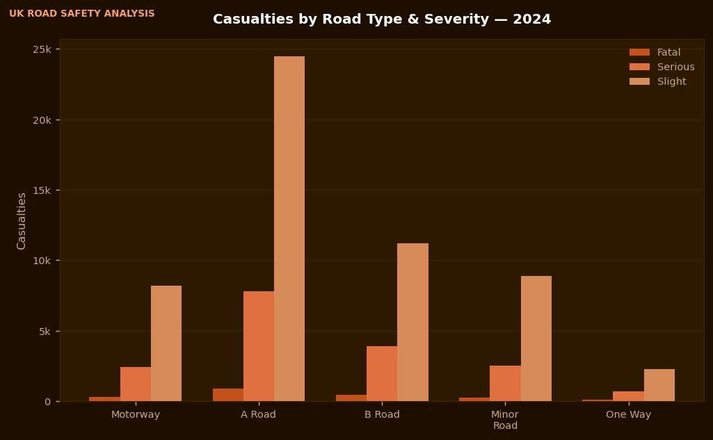

Data VizUK Road Safety Data Analysis
Analysed Department for Transport 2024 collision, casualty, and vehicle datasets to identify high-risk conditions, vulnerable road users, and geographic hotspots across Great Britain.
Python
pandas
Matplotlib
Power BI
View Project